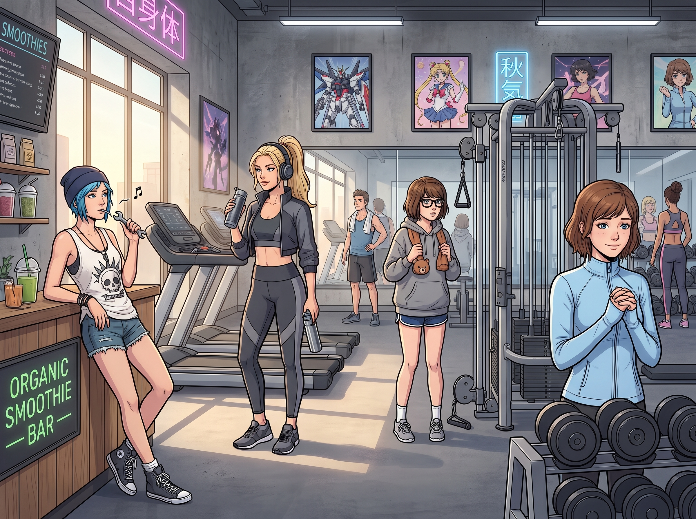

名媛的體能淨化行動

這場由 Victoria 強行發起的「工坊體能與體脂淨化行動」，直接把波特蘭最頂級的會員制精品健身房變成了全員翻車的爆笑修羅場。
起因是 Victoria 發現外賣垃圾桶裡堆了整整三天的雙倍芝士厚底披薩、炸洋蔥圈和 Chloe 的重油辣肉醬熱狗堡。名媛大小姐當場以「大股東資產保全與公眾形象維護」為由，沒收了所有人的車鑰匙，將三人押上了她的保時捷。
一、入場著裝
Victoria 一身深灰拼色限量版運動套裝，頭髮梳成俐落的高馬尾，手持智能保溫杯，連運動耳機都是定制降噪款，宛如剛從時尚雜誌封面走下來。
Chloe 標誌性骷髏白背心加磨邊牛仔短褲，腳踩高筒帆布鞋，手裡甚至還轉著一根拆車用的小扳手，一進門就對著前台的有機果昔吧台吹口哨：「這裡的香水味比我們暗房的定影液還衝。」
Max 穿著寬鬆的大號灰色衛衣和高中體育短褲，黑框眼鏡用防滑帶綁在腦後，懷裡緊緊抱著一條小熊擦汗巾，一臉茫然。
Kate 穿著淡藍色長袖運動開衫，將拉鍊拉到最頂端，雙手合十，溫柔地對著每一台器械微笑點頭，彷彿在為它們進行受洗儀式。
二、項目實測
Victoria 剛幫 Max 把跑步機履帶速度調快，開啟坡度模式。不到三分鐘，平時全靠快門線和暗房小板凳維持生命的 Max 就開始面色慘白、大口喘氣，整個人像一隻在履帶上瘋狂倒騰小短腿的受驚小鹿。最後 Chloe 翻過扶手一記精準的「緊急制動拍擊」，直接把雙腿發軟的 Max 像拎小貓一樣扛下了跑步機。
到了普拉提核心床區域，Kate 展現出了驚人的平靜與柔韌度，行雲流水般完成了整套懸掛伸展，動作優雅得宛如在花園晨禱。輪到 Chloe 時，這位能單手舉起柴油發動機變速箱的汽修工，在彈簧阻力下四肢僵硬如生鏽的鐵板：「停停停！Chase！老娘的髖關節要像報廢避震器一樣爆開了！！」
為了挽回面子，Chloe 拽著大家衝進了懸吊訓練區。看到幾個穿著緊身背心的肌肉猛男在單槓前吃力地做著引體向上、勉強撐到第五下就滿臉通紅地放棄，Chloe 挑了挑眉，隨手脫掉外套扔給 Max，戴著她的破皮手套跳上單槓，用一種常年扳動生鏽螺栓才會養成的詭異握姿抓緊槓子，臉不紅氣不喘地連續完成了十五下標準引體向上，收尾時甚至在最高點多停頓了半秒，展示了一下核心控制力。
全場猛男目瞪口呆，Chloe 則落地後轉身對著 Victoria 咧嘴大笑：「看見沒，大股東？每天徒手拆卸鏽死的螺栓和搬運鋼軌枕木，老娘這雙手的抓握力和拉力，比你們這些只會盯著鏡子練手臂維度的傢伙硬核多了！」
「手臂而已，」Victoria 挑起一邊眉毛，語氣裡帶著毫不掩飾的不服氣，「上半身強不代表全面。妳敢不敢跟我比一場真正考驗心肺與腿部耐力的項目？」
「跑步機？」Chloe 立刻挑釁地接話，「隨時奉陪，反正老娘的肺活量從小在阿卡迪亞灣被風暴訓練出來的。」
兩人誰也不讓誰，直接並排跳上了相鄰的兩台跑步機，把配速一路往上調，誰都不肯先喊停。Max 和 Kate 站在一旁，眼睜睜看著這場毫無理智可言的意氣之爭從輕鬆慢跑迅速升級成近乎衝刺的速度。
十分鐘後，兩人的臉色都已經漲得通紅，呼吸急促得幾乎要喘不過氣，但誰都死撐著不肯先按下停止鍵。
「我……我還能……」Chloe 扶著扶手，話說到一半就被急促的喘息打斷，「再跑……三公里……」
「少……少廢話，」Victoria 同樣上氣不接下氣，額前的碎髮被汗水黏在臉頰上，「我的心肺功能……可比妳……穩定多了……」
最後還是 Max 忍無可忍，直接伸手拍停了兩台跑步機的緊急制動鈕，才結束了這場誰也贏不了、卻讓兩人腿部肌肉徹底透支的荒謬對決。
三、翻車後的熱量妥協
兩小時後，四人筋疲力盡地坐在健身房外的長椅上。
Victoria 的高馬尾有些散亂，雙腿發酸地捧著一杯無糖羽衣甘藍汁；Max 整個人癱成了一張失去靈魂的黑白相紙，靠在 Chloe 的肩膀上一動不動；Chloe 揉著拉傷的肩膀齜牙咧嘴；Kate 則溫柔地幫每個人按摩著緊繃的小腿肌肉。
「所以……」Chloe 晃了晃手裡的手機外賣界面，眼神閃爍著勝利的光芒，「鑑於我們今天每人消耗了至少八百卡路里，某位尊貴的名媛應該不介意我們在回工坊的路上，順便去買一打剛出爐的楓糖培根肉桂卷吧？」
Victoria 揉了揉太陽穴，看著 Max 慘兮兮的求救眼神和 Kate 期待的微笑，終於無奈地吐出一口氣：「……買可以。但肉桂卷的碎屑要是掉進我的真皮座椅縫隙裡，明天早上六點，全員加練一組波比跳。」
夕陽下，保時捷帶著四個疲憊卻笑聲不斷的女孩駛向波特蘭東區，而在車廂工坊裡等待她們的，依然是溫暖的草本茶、香脆的甜點與永不打烊的安寧時光。